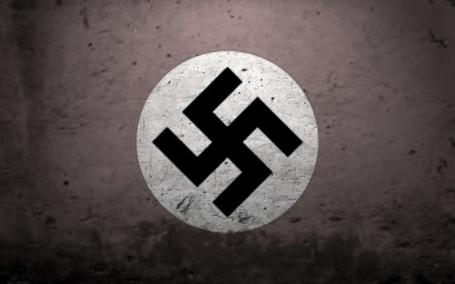
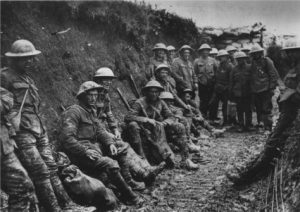

...Adolf Hitler...
“And I can fight only for something that I love, love only what I respect, and respect only what I at least know.”
-Adolf Hitler
Born the to Austrian customs officer Alois Hitler--who had been
married twice before--and the former Klara Polzl, Adolf Hitler grew up in a small Austrian
town in the late 19th century.At first he was really good at studies and was the leader in
of his school group but later when they shifted and he got into a new school things did not
go well , He was not performing well in school. He became a slow learner and did poorly in
school. He was frequently beaten by his father. Things got worse when Adolf's
older brother, Alois Jr., ran away from home. His mother occasionally tried to
shield him, but was ineffectual. Adolf's attempt to run away at 11 was unsuccessful.
At the age of 14 he was freed when his father died .
Hitler dropped out of high school at age 16 and went to Vienna, where he strove to become an
artist, but was refused twice by the Vienna Art Academy. Now he didn't have enough money to
eat and was homeless . By this time Hitler had become an ardent
German nationalist--although he was not German but Austrian--and when World War I broke out,
he crossed into Germany and and joined a Bavarian regiment in the German army...
...Hitler's mother died when he was 18 . Adolf Hitler, who had a close relationship with his
mother, was devastated by her death and carried the grief for the rest of his life. He was
assigned as a message runner but also saw combat. Temporarily blinded after a gas attack
in Flanders in 1918, he received the Iron Cross 2nd Class and was promoted from private
to corporal. In 1918, when the war ended, Hitler stayed in the army and was posted to the
Intelligence division. He was assigned to spy on several radical political parties that
were considered a threat to the German government...
One such organization was the German Workers Party. Hitler was drawn by party founder Dietrich
Eckart, propagated doctrines of mysticism and anti-Semitism. Hitler soon
joined the party with the help of his military intelligence ties. He became party spokesman in
1919, renamed it the National Socalist German Workers Party (NSDAP/NAZI) and declared himself
its leader one year later. In 1920 Hitler's intelligence handler, Munich-based colonel
named Karl Haushofer, introduced the swastika insignia. In 1921 Haushofer founded the
paramilitary Storm Troopers ("Sturmabteiling", or SA), composed of German veterans of WWI and
undercover military intelligence officers.
...
They helped Hitler to organize a coup attempt--the infamous "beer hall putsch"--against the
Bavarian government in Munich in 1923, but it failed. The "rebels" marched on Munich's city
hall, which was cordoned off by police. Hitler's men fired at the police and missed; the police
fired back and didn't, resulting in several of Hitler's fellow Nazis being shot dead. Hitler
himself was arrested, convicted of treason and sent to prison .

During his prison time he was coached by his advisers and dictated his book "Mein Kampf"
("My Struggle") to his deputy Rudolf Hess. He only served several months in prison before
being released . In his autobiography Mein Kampf, Hitler wrote that he had "honored my
father, but loved my mother" and said that his mother's death was a "dreadful blow."
His book describes the process by which Hitler became antisemitic and outlines his
political ideology and future plans for Germany.
Hitler wrote in Mein Kampf of his hatred towards what he believed were the world's twin
evils, namely communism and Judaism. He said his aim was to eradicate both from Germany
and moreover stressed his intention to unite all Germans in the process of destroying
them .
>
"He alone, who owns the youth, gains the future"

A few days before Christmas 1924, Adolf Hitler emerged a free man after nine months in prison,
having learned from his mistakes.Hitler had given
considerable thought to the failed Nazi revolution (Beer Hall Putsch) of November 1923, and its
implications for the future.
He now realized it had been premature to attempt to overthrow the democratic government by force
without the support of the German Army and other established institutions. He was determined not
to make that mistake again. Now, no matter how much his Nazi Party members wanted action taken
against the young German democratic republic, it simply would not happen. He would not give in
to them as he had done in November 1923, with disastrous, even laughable results .
Hitler had a new idea on how to topple the government and take over Germany for himself
and the Nazis – play by the democratic rules and get elected.
"Instead of working to achieve power by an armed coup we shall have to hold our noses and enter
the Reichstag against the Catholic and Marxist deputies. If outvoting them takes longer than
outshooting them, at least the results will be guaranteed by their own Constitution! Any
lawful process is slow. But sooner or later we shall have a majority – and after that Germany,"
hitler stated while in prison.
The Nazi Party would be organized like a government itself, so that when power was achieved
and democracy was legitimately ended, this 'government in waiting' could slip right into
place.
But before any of this could be started, Hitler had some problems to overcome. After
the Beer Hall Putsch, the government of the German state of Bavaria banned the Nazi Party
and its newspaper, the Völkischer Beobachter (Peoples' Observer). Also, the Nazi Party
was now badly disorganized with much infighting among its leaders.
Early in 1925, Hitler visited the Prime Minister of Bavaria and managed to convince him to
lift the ban, on the promise of good behavior, and after promising that the Nazis would work
with the rules of the democratic constitution.
By 1925 the Nazi party was in much better straits both organizationally and financially, as it had
secured the backing of a large group of wealthy conservative German industrialists, who funneled
huge amounts of money into the organization...
Hitler was provided with a personal bodyguard unit named
the "Schutzstaffel", better known as the SS. The Nazis began to gain considerable support in
Germany through their network of army and WWI veterans, and Hitler ran for President in 1931...
Defeated by the incumbent Paul von Hindenburg, Hitler next attempted to become Chancellor
Hitler was appointed Chancellor in January 1933. One month later, a mysterious fire--which
the Nazis claimed had been started by "terrorists" but was later discovered to have been
set by the Nazis themselves--destroyed the Reichstag (the building housing the German parliament)
. Then Hitler's machine began to issue a series of emergency decrees that gave the office of
Chancellor more and more power of Germany.n March of 1933 Hitler persuaded the German
parliament to pass the Enabling Act, which made the Chancellor dictator of Germany and
gave him more power than the President. Two months later Hitler began "cleaning house";
he abolished trade unions and ordered mass arrests of members of rival political groups.
“To conquer a nation, first disarm its citizens.”
By the end of 1933 the Nazi Party was the only one allowed in Germany. In June of 1934 Hitler
turned on his own and ordered the purge of the now radical SA--that he now saw as a potential threat
to his power , was assasinated.Soon President Hindenburg died, and Hitler merged the office of
President with the office of Chancellor. In 1935 the anti-Jewish Nuremburg laws were passed on
Hitler's authorization. A year later, with Germany now under his total control, he sent troops
into the Rhineland, which was a violation of the World War I Treaty of Versailles.
In 1938 he forced the union of Austria with Germany and also took the Sudetenland on the
pretext of "protecting" the German population from the Czechs.
In March 1939 Hitler overran the rest of Czechoslovakia. On 23 August 1939 Hitler and Joseph
Stalin made a non-aggression treaty. In September of 1939 Hitler and Stalin invaded Poland.
France and the British Commonwealth and Empire declared war on Germany. In 1940 Germany occupied
Denmark, Norway and the Low Countries, and launched a major offensive against France. Paris fell
and France surrendered, after which Hitler considered invading the UK. However, after the German
Air Force was defeated in the Battle of Britain, the invasion was canceled. The British had begun
bombing German cities in May 1940, and four months later Hitler retaliated by ordering the Blitz.
In 1941 German troops assisted Italy, which under dictator Benito Mussolini was a German ally, in
its takeover of Yugoslavia and Greece. Meanwhile, in Germany and the occupied countries, a program
of mass extermination of Jews had begun.

On June 22, 1941, German forces invaded the Soviet Union. In addition to ore than 4,000,000 German
troops, there were additional forces from German allies Romania, Italy, Czechoslovakia, Hungary,
Croatia, Spain and Finland, among others. Hitler used multinational forces in order to save
Germans for the future colonization of the Russian lands. Following the detailed Nazi plan,
code-named "Barbarossa," Hitler was utilizing resources of entire Europe under Nazi control to
feed the invasion of Russia. Three groups of Nazi armies invaded Russia: Army Group North
besieged Leningrad for 900 days, Army Group Center reached Moscow and Army Group South occupied
Ukraine, reached Caucasus and Stalingrad. After a series of initial successes, however,
the German Armies were stopped at Moscow, Leningrad and Stalingrad. Leningrad was besieged
by the Nazis for 900 days until the city of 4,000,000 virtually starved itself to death. Only
in January of 1944 was Marshal Georgi Zhukov able to finally defeat the German forces and
liberate the city, finally lifting the siege after a cost of some 2,000,000 lives.
In 1943 several major battles occurred at Kursk (which became the largest tank battle in
history), Kharkov and Stalingrad, all of which the Germans lost. The battle for Stalingrad was
one of the largest in the history of mankind. At Stalingrad alone the Germans lost 360,000
troops, in addition to the losses suffered by Italian, Hungarian, Romanian, Czech, Croatian
and other forces, but the Russians lost over one million men. By 1944--the same year the
Western allies invaded occupied Europe--Germany was retreating on both fronts and its
forces in Africa had been completely defeated, resulting in the deaths and/or surrender
of several hundred thousand troops. Total human losses during the six years of war were
estimated at 60,000,000, of which 27,000,000 were Russians, Ukrainians, Jews and other people
in Soviet territory. Germany lost over 11,000,000 soldiers and civilians. Poland and
Yugoslavia lost over 3,000,000 people each. Italy and France lost over 1,000,000 each.
Most nations of Central and Eastern Europe suffered severe--and in some cases total--economic
destruction.
Hitler's ability to act as a figurehead of the Nazi machine was long gone by late 1944.
Many of his closest advisers and handlers had already fled to other countries, been imprisoned
and/or executed by the SS for offenses both real--several assassination attempts on Hitler--
and imagined, or had otherwise absented themselves from Hitler's inner circle. For many years
Hitler was kept on drugs by his medical personnel.
In 1944 a group of German army officers
and civilians pulled off an almost successful assassination attempt on Hitler, but he survived.
Hitler, by the beginning of 1945, was a frail, shaken man who had almost totally lost touch
with reality.
The Russians reached Berlin in April of that year and began a punishing assault
on the city. As their forces approached the bunker where Hitler and the last vestiges of his
government were holed up, Hitler killed himself.
Just a day earlier he had married his
longtime mistress Eva Braun. Hitler's corpse was taken to Moscow and later shown to
Allied Army Commanders and diplomats. Joseph Stalin showed Hitler's personal items to
Winston Churchill and Harry S. Truman at the Potsdam Conference after the victory.
Hitler's personal gun was donated to the museum of the West Point Military Academy
in New York. Some of his personal items are now part of the permanent collection at
the National History Museum in Moscow, Russia.
“Anyone can deal with victory. Only the mighty can bear defeat.”
| born |
20 April 1889 |
Braunau am Inn |
| Alois hitler |
Klara hitler |
|
Died on 30 April 1945 (aged 56)
|
Cause of death Suicide by gunshot
|
Political party Nazi Party (1921–1945)
|